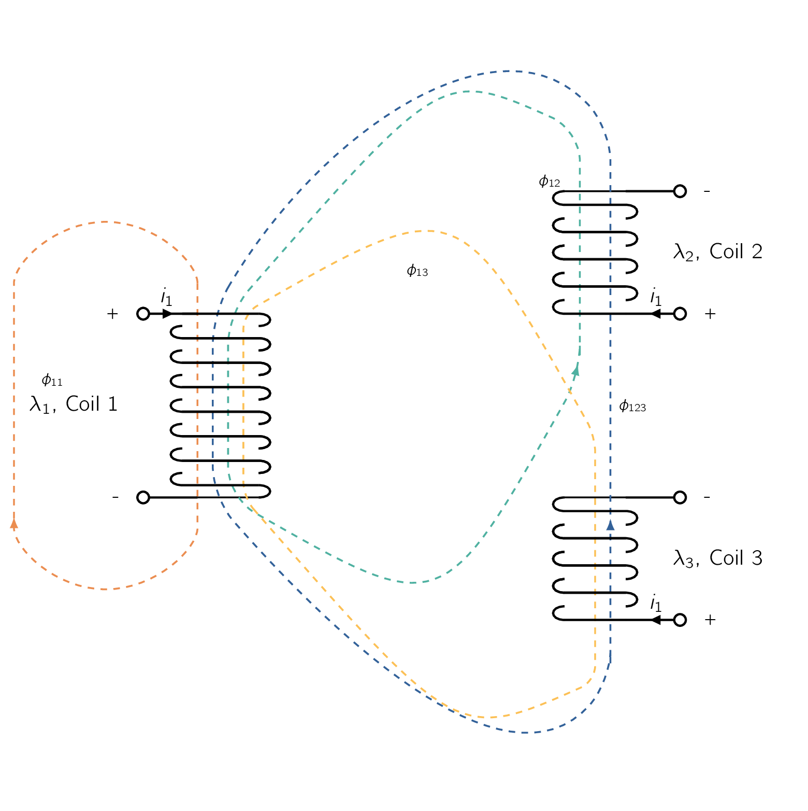
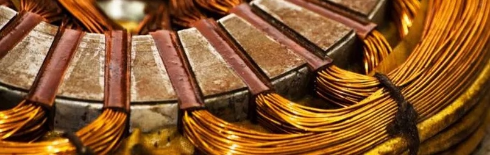

Every engineering project revolves around what a material can do and this is true with design of electrical machines, and when it comes to electrical machines no material play as much as the magnetic material. In this section we will have a look at the relevant limitations imposed by the materials: saturation and leakage flux.
It goes without saying but to reiterate:
The characteristics of electric machines depend heavily upon the use of magnetic materials.
These materials are required to form the magnetic circuit and are used by the machine designer to obtain specific machine characteristics. However, as we can imagine, magnetic materials are less than ideal. As the magnetic flux they carry increases, they begin to saturate, with the result being a decrease in the materials magnetic permeability, along with its effectiveness in contributing to the overall flux density in the machine.
Both electromechanical torque and generated voltage in all machines depend on the winding flux linkages. For specific MMFMagneto-motive ForceThe magnetic pressure which drives magnetic flux in a magnetic circuit, and is the work done to move a unit magnetic pole.s in the windings, the fluxes depend on the reluctances of the iron portions of the magnetic circuits and on those of the air gaps. Saturation may therefore appreciably influence the characteristics of the machines. Another aspect of saturation which is important is how we approach to model an electrical machine. Specifically, relations for the air-gap MMFMagneto-motive ForceThe magnetic pressure which drives magnetic flux in a magnetic circuit, and is the work done to move a unit magnetic pole. are generally based on the assumption of negligible reluctance in the iron.
When these relations are applied to practical machines with varying degrees of saturation in the iron, significant errors in the analytical results can be expected.
To improve these analytical relationships, in one approach the actual machine is replaced by an equivalent machine whose iron has negligible reluctance but whose air-gap length is increased by an amount sufficient to absorb the MMFMagneto-motive ForceThe magnetic pressure which drives magnetic flux in a magnetic circuit, and is the work done to move a unit magnetic pole. drop in the iron of the actual machine.
This means that to model the effect of saturation, we increase the air-gap in our idealised machine to take the effect into account.
Similar to the above premise, the effects of air-gap non-uniformities such as slots and ventilating ducts are also incorporated by increasing the effective air-gap length. [108] However, from a manufacturing point of view, techniques must be verified and confirmed experimentally before we can call a product ready.
In cases where such simple techniques are found to be inadequate or if the motor geometry proves itself to be unwieldy, detailed analyses, such finite-element or other numerical techniques, can be used.
Saturation characteristics of rotating machines are often presented in the form of an open-circuit characteristic, also called a magnetization curve or saturation curve. For a SynMSynchronous Machinean AC electrical device which operates at a constant synchronous speed, serving as either a synchronous generator (alternator) or a synchronous motor. It features a stationary stator with three-phase windings and a rotating rotor excited by direct current (DC) or permanent magnets., the open-circuit saturation curve is obtained by operating the machine at constant speed and measuring the open-circuit armature voltage as a function of the field current. A typical open-circuit saturation curve for a synchronous machine takes the form shown in Fig. 4.20.

It is worth mentioning here that the nature of this curve is determined both by the geometry of the machine under consideration as well as by the magnetization characteristics of the electrical steel used in the machine. The straight line tangent to the lower portion of the curve is the air-gap line, corresponding to low levels of flux density within the machine. Under these conditions the reluctance of the machine iron is typically negligible, and the MMFMagneto-motive ForceThe magnetic pressure which drives magnetic flux in a magnetic circuit, and is the work done to move a unit magnetic pole. required to excite the machine is simply that required to overcome the reluctance of the air gap. If it were not for the effects of saturation, the air-gap line and open-circuit characteristic would coincide. Therefor, the departure of the curve from the air-gap line as the field current is increased is an indication of the degree of saturation in the machine. [109] In typical machines the ratio at rated voltage of the total MMFMagneto-motive ForceThe magnetic pressure which drives magnetic flux in a magnetic circuit, and is the work done to move a unit magnetic pole. to that required by the air gap alone is between 1.1 and 1.25.
At the design stage, the open-circuit characteristic can be calculated using techniques such as FEMFinite Element MethodA popular numerical technique for solving differential equations in engineering and physics, breaking complex shapes into simpler elements, and turning continuous problems into algebraic equations.. A typical FEMFinite Element MethodA popular numerical technique for solving differential equations in engineering and physics, breaking complex shapes into simpler elements, and turning continuous problems into algebraic equations. solution for the flux distribution around the pole of a salient-pole machine is shown in Fig. 4.21 using the open-source software getDP. The distribution of the air-gap flux found from this solution, together with the fundamental and third-harmonic components, is shown in Fig. 4.22.
In addition to saturation effects, Fig. 4.22 clearly illustrates the effect of a non-uniform air gap. As we would expect, the flux density over the pole face, where the air gap is small, is much higher than that away from the pole. [110] This type of detailed analysis is of great use to a designer in obtaining specific machine characteristics.
As we have seen by now, the magnetization curve for an existing SynMSynchronous Machinean AC electrical device which operates at a constant synchronous speed, serving as either a synchronous generator (alternator) or a synchronous motor. It features a stationary stator with three-phase windings and a rotating rotor excited by direct current (DC) or permanent magnets. can be determined by operating the machine as an unloaded generator and measuring the values of terminal voltage corresponding to a series of values of field current. If we want to do the same thing for an IMInduction Machinean AC electric motor in which the electric current in the rotor that produces torque is obtained by electromagnetic induction from the magnetic field of the stator winding., the machine is operated at or close to synchronous speed, [111] in which case very little current will be induced in the rotor windings. and the stator current is measured as a function of stator terminal voltage. The magnetization curve is produced by plotting the stator voltage as a function of stator current.
It should be emphasized that saturation in a fully loaded machine occurs as a result of the total MMFMagneto-motive ForceThe magnetic pressure which drives magnetic flux in a magnetic circuit, and is the work done to move a unit magnetic pole. acting on the magnetic circuit. As flux distribution under load generally differs from that of no-load conditions, machine saturation characteristics may vary from the open-circuit curve of Fig. 4.20.
When we studied transformers in a previous chapter, we have seen that in a two-winding transformer, the flux created by each winding can be separated into two (2) components:
- Mutual Flux
-
One component consists of flux which links both windings, causing coupling between the two coils.
- Leakage Flux
-
the other consists of flux which links only the winding creating the flux. Contributes only to the self-inductance of each coil.
Note that the concept of mutual and leakage flux is meaningful only in the context of a multi-winding system. For systems of three or more windings, the bookkeeping must be done very carefully. Consider, for example, the three-winding system of Fig. 4.23.

Shown schematically are the different components of flux created by a current in winding 1. Here is clearly mutual flux that links all three windings, and is clearly leakage flux since it links only winding 1. However, is mutual flux with respect to winding 2 yet is leakage flux with respect to winding 3, while mutual flux with respect to winding 3 and leakage flux with respect to winding 2.
Electric machinery is a system of multiple windings, which requires a careful overview to account for the flux contributions of different types windings.
Air-Gap Space-Harmonic Fluxes Although single distributed coils create air-gap flux with a significant amount of space-harmonic content, it is possible to distribute these windings so the space-fundamental component is accentuated while the harmonic effects are greatly reduced.
As a result, we can neglect harmonic effects and consider only space-fundamental fluxes.
Though often small, the space-harmonic components of air-gap flux do exist.
-
In DCDirect CurrentOne-directional flow of electric charge. Direct current may flow through a conductor such as a wire, but can also flow through semiconductors, insulators, or even through a vacuum as in electron or ion beams. The electric current flows in a constant direction, distinguishing it from alternating current (AC). A term formerly used for this type of current was galvanic current. machines they are useful torque-producing fluxes and therefore can be counted as mutual flux between the rotor and stator windings.
-
In ACAlternating CurrentAn electric current that periodically reverses direction and changes its magnitude continuously with time, in contrast to direct current (DC), which flows only in one direction. machines, however, they may generate time-harmonic voltages or asynchronously rotating flux waves.
Slot-Leakage Flux Fig. 4.24 shows the flux created by a single coil side in a slot. Please observe that, in addition to flux which crosses the air gap, which contributes to the air-gap flux, there are flux components which cross the slot. In a slot with coils from a single phase, this flux links only the coil that is producing it. It also forms a component of the leakage inductance of the winding producing it. In other cases, coils of two phases share a single slot and some of the slot flux is mutual between the phases. However, since this flux does not cross the air gap, it remains leakage flux with respect to any windings on the rotor.
End-Turn Fluxes Fig. 4.25 shows the stator end windings of an ACAlternating CurrentAn electric current that periodically reverses direction and changes its magnitude continuously with time, in contrast to direct current (DC), which flows only in one direction. machine. The magnetic field distribution created by end turns is extremely complex. In general these fluxes do not contribute to useful rotor-to-stator mutual flux, and thus they, too, contribute to leakage inductance. From this discussion we can see the self-inductance expression needs to be modified by an additional term , which represents the winding leakage inductance.
This leakage inductance corresponds directly to the leakage inductance of a transformer winding as discussed in Magnetic Circuits and Materials.
Although the leakage inductance is usually difficult to calculate analytically and must be determined by approximate or empirical techniques, it plays an important role in machine performance.

-
¶
- ACAlternating Current
An electric current that periodically reverses direction and changes its magnitude continuously with time, in contrast to direct current (DC), which flows only in one direction.
-
¶
- DCDirect Current
One-directional flow of electric charge. Direct current may flow through a conductor such as a wire, but can also flow through semiconductors, insulators, or even through a vacuum as in electron or ion beams. The electric current flows in a constant direction, distinguishing it from alternating current (AC). A term formerly used for this type of current was galvanic current.
-
¶
- IMInduction Machine
an AC electric motor in which the electric current in the rotor that produces torque is obtained by electromagnetic induction from the magnetic field of the stator winding.
-
¶
- FEMFinite Element Method
A popular numerical technique for solving differential equations in engineering and physics, breaking complex shapes into simpler elements, and turning continuous problems into algebraic equations.
-
¶
- SynMSynchronous Machine
an AC electrical device which operates at a constant synchronous speed, serving as either a synchronous generator (alternator) or a synchronous motor. It features a stationary stator with three-phase windings and a rotating rotor excited by direct current (DC) or permanent magnets.
-
¶
- MMFMagneto-motive Force
The magnetic pressure which drives magnetic flux in a magnetic circuit, and is the work done to move a unit magnetic pole.